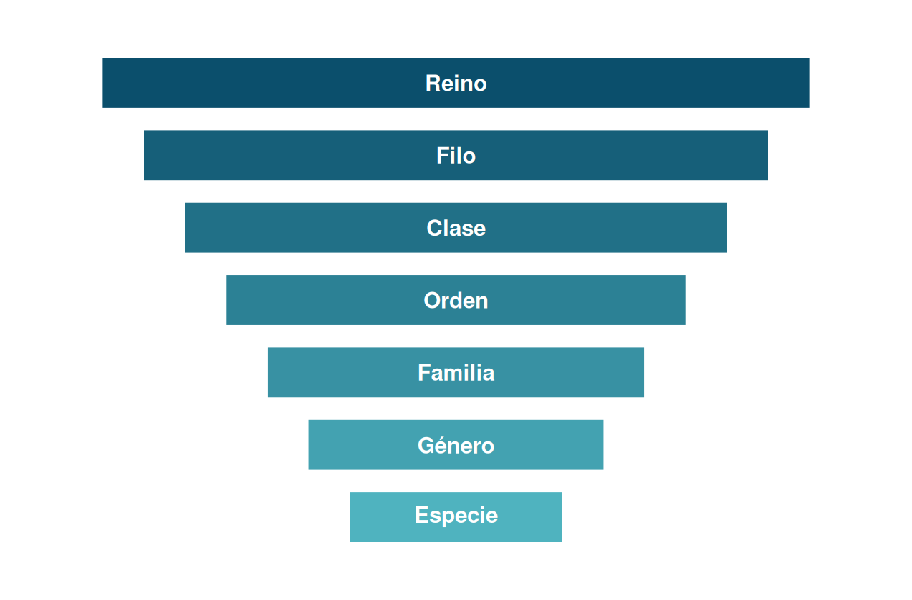
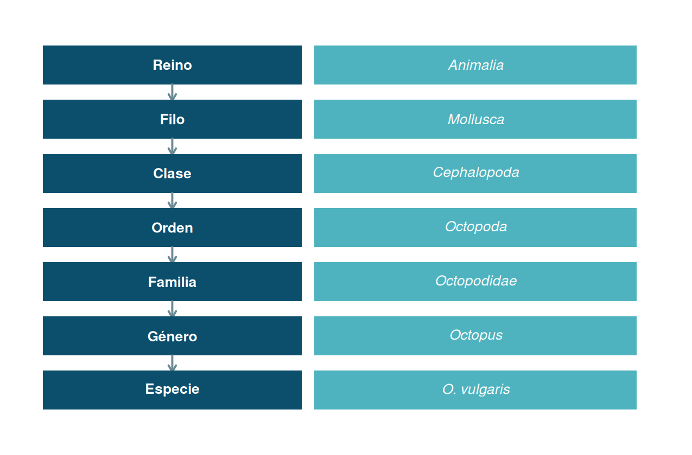
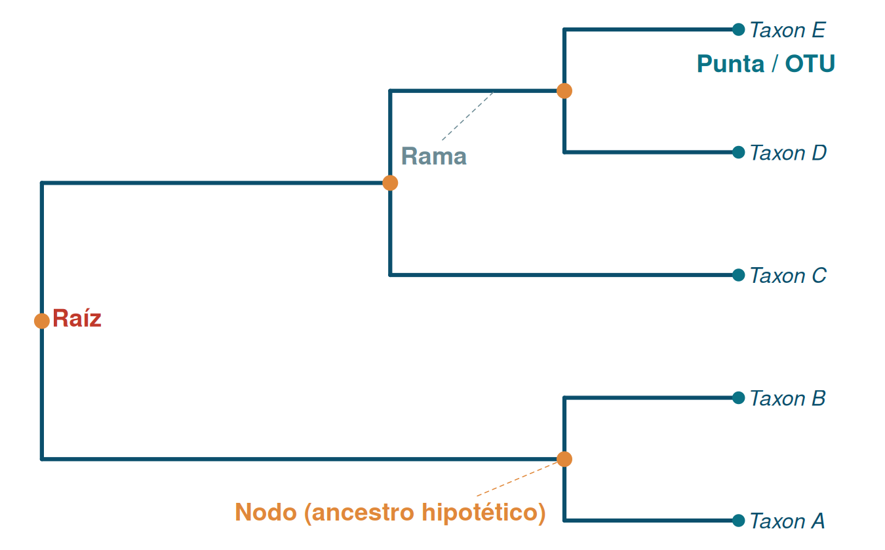
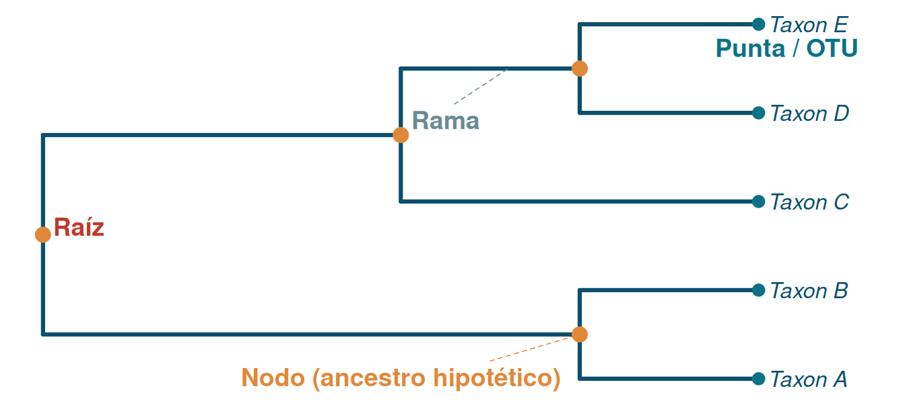
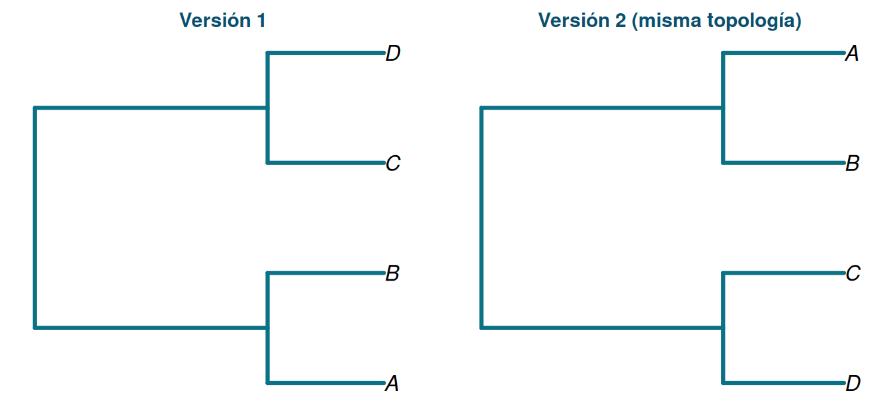
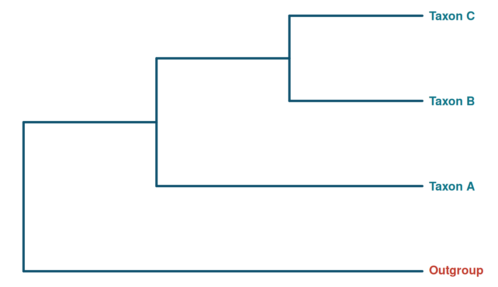
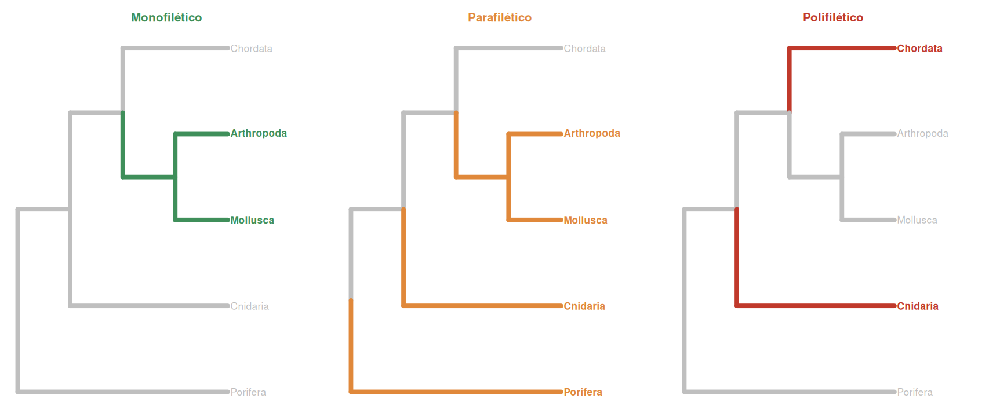
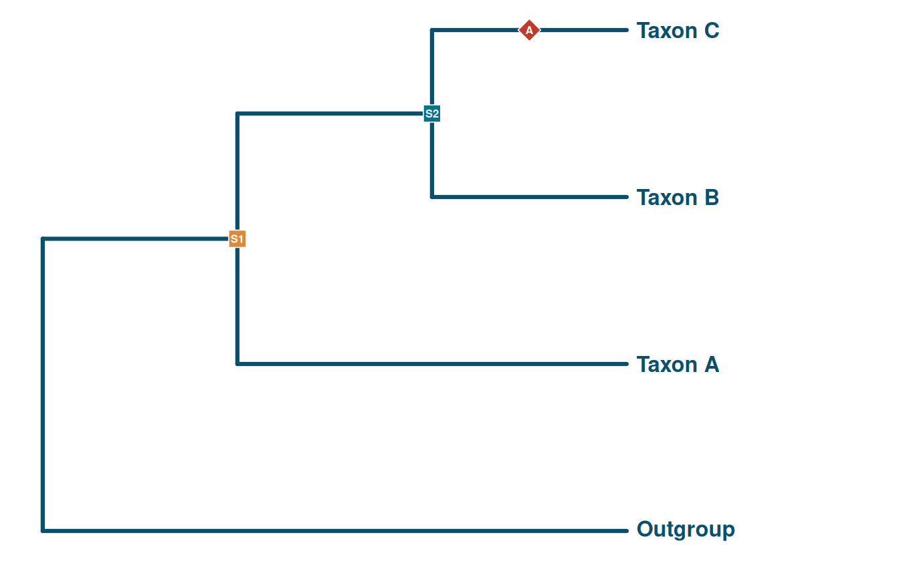
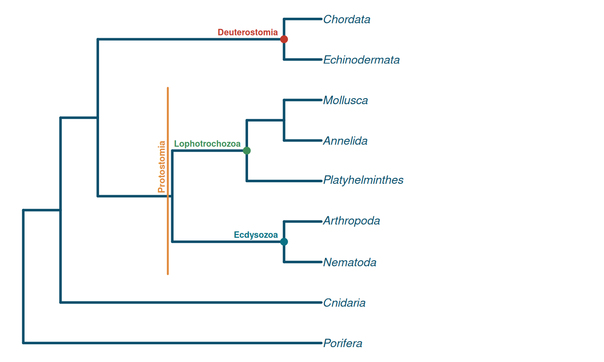
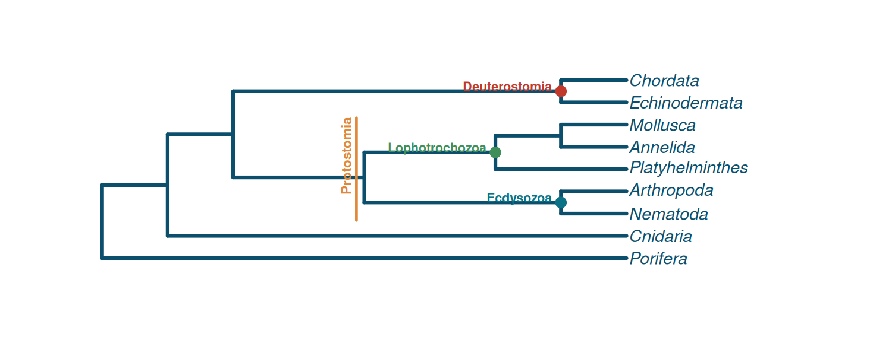

Principios básicos de la Sistemática
Terminología, árboles filogenéticos y su relevancia en Zoología de Invertebrados
20 de julio, 2026
Introducción
Objetivos de la clase
Al finalizar esta sesión, el estudiante será capaz de:
- Definir sistemática y taxonomía y diferenciarlas con claridad.
- Manejar la terminología esencial de la sistemática biológica.
- Interpretar correctamente un árbol filogenético: sus partes y su lógica.
- Distinguir entre grupos monofiléticos, parafiléticos y polifiléticos.
- Comprender por qué la filogenia reorganizó la clasificación clásica de los invertebrados.
- Argumentar la relevancia del enfoque filogenético en el estudio de los invertebrados.
¿Por qué empezar por aquí?
Los invertebrados representan más del 95% de las especies animales descritas.
Sin un marco sistemático y filogenético claro, es imposible:
- comunicar hallazgos de forma inequívoca,
- comparar resultados entre investigadores,
- ni entender la historia evolutiva de este grupo tan diverso.
Sistemática y taxonomía
Sistemática: definición
Sistemática es la disciplina biológica que estudia la diversidad de los organismos y las relaciones evolutivas (de parentesco) entre ellos, para ordenarlas en un sistema de clasificación.
- Integra evidencia morfológica, molecular, ecológica y del desarrollo.
- Su producto final es un sistema de clasificación que refleja la evolución.
- Es la disciplina “paraguas” que incluye a la taxonomía.
Términos que suelen confundirse
Sistemática
Estudia el parentesco evolutivo entre organismos y construye la clasificación.
Taxonomía
Teoría y práctica de describir, nombrar y ordenar organismos en taxones.
La taxonomía es una herramienta de la sistemática; la clasificación es su producto.
Breve contexto histórico
- Carl Linneo (S. XVIII): sistema jerárquico y nomenclatura binomial — base de la taxonomía moderna.
- Charles Darwin (1859): la clasificación debía reflejar ascendencia común, no solo similitud.
- Willi Hennig (1950–60s): funda la sistemática filogenética (cladística) — clasificar según genealogía estricta.
- Últimas 3 décadas: datos moleculares revolucionan la filogenia de invertebrados (p. ej. reorganización de Bilateria).
¿Por qué importa tanto en invertebrados?
- Es el grupo animal con mayor diversidad de planes corporales (Bauplan).
- Muchos caracteres morfológicos son producto de convergencia evolutiva → fácil clasificar mal si solo se usa morfología superficial.
- La sistemática ordena ese universo de formas en un marco comprobable y predictivo.
Sin sistemática rigurosa, términos como “gusano” o “concha” agrupan organismos que no están emparentados.
Terminología esencial
Taxón y categoría taxonómica
Taxón (pl. taxa): unidad o grupo concreto de organismos reconocido formalmente en una clasificación (p. ej. Mollusca, Octopus vulgaris).
Categoría taxonómica (rango): el nivel jerárquico que ocupa un taxón (p. ej. Filo, Clase, Género).
Mollusca es un taxón que ocupa la categoría de Filo.
La jerarquía linneana

Figura 1: Categorías taxonómicas principales, de mayor a menor inclusividad.
Ejemplo aplicado: el pulpo común

Figura 2: Jerarquía taxonómica completa de Octopus vulgaris.
Nomenclatura binomial
Todo nombre científico de especie se compone de dos partes en latín (o latinizadas):
Género + epíteto específico, siempre en cursiva.
- Ejemplo: Octopus vulgaris Cuvier, 1797
- El género siempre inicia con mayúscula; el epíteto, en minúscula.
- Regida internacionalmente por el Código Internacional de Nomenclatura Zoológica (ICZN) para animales.
El nombre científico evita la ambigüedad de los nombres comunes, que cambian entre regiones e idiomas.
El concepto de especie
Existen varios criterios; en zoología de invertebrados suelen combinarse:
- Concepto biológico: poblaciones que se reproducen entre sí y producen descendencia fértil.
- Concepto morfológico: diferencias diagnósticas de forma y estructura.
- Concepto filogenético: el linaje más pequeño diagnosticable con un ancestro común exclusivo.
En invertebrados, reproducción asexual, especies crípticas y escaso registro conductual hacen que el concepto filogenético/morfológico sea frecuentemente el más práctico.
De la clasificación a la filogenia
¿Qué es la filogenia?
Filogenia: la historia evolutiva de las relaciones de parentesco entre un conjunto de organismos o linajes.
- Se representa gráficamente mediante un árbol filogenético.
- Es una hipótesis científica, contrastable y revisable con nueva evidencia.
- Hoy integra datos morfológicos y moleculares (ADN, ARN, genomas completos).
¿Qué es un árbol filogenético?
Diagrama ramificado que representa las hipótesis de parentesco evolutivo entre taxones, a partir de un ancestro común.
Permite responder preguntas como:
- ¿Qué grupos están más emparentados entre sí?
- ¿En qué orden aparecieron ciertos caracteres?
- ¿Es válida una clasificación tradicional a la luz de la evolución?
Anatomía de un árbol filogenético

Figura 3: Elementos básicos de un árbol filogenético.
Vocabulario del árbol
- Raíz: el ancestro común más antiguo representado en el árbol.
- Nodo (interno): punto de bifurcación → representa un ancestro hipotético común.
- Rama (arista): conecta dos nodos y representa un linaje a través del tiempo.
- Punta / hoja / OTU (Operational Taxonomic Unit): los taxones actuales, en los extremos.
- Clado: un nodo y todos sus descendientes.
- Topología: el patrón de ramificación — la información de parentesco real del árbol.

Figura 4: Elementos básicos de un árbol filogenético.
Un detalle clave para leer árboles
Un árbol se puede rotar libremente en sus nodos sin cambiar su significado: el orden de las puntas no indica parentesco, solo la topología (los nodos que comparten) lo indica.

Figura 5: Dos representaciones equivalentes del mismo árbol.
Grupo hermano y grupo externo

Figura 6: El grupo externo (outgroup) permite enraizar el árbol y polarizar los caracteres.
- Grupo interno (ingroup): el conjunto de taxones que realmente interesa estudiar.
- Grupo externo (outgroup): un taxón fuera del grupo de interés, usado para enraizar el árbol.
- Grupos hermanos: dos linajes que son el pariente más cercano entre sí (comparten un nodo exclusivo).
Monofilia, parafilia y polifilia
Por qué esta distinción es crucial
La sistemática filogenética moderna solo acepta como grupos válidos (naturales) a los grupos monofiléticos (clados).
Esto tuvo un impacto directo en la zoología de invertebrados:
“Invertebrata” (todos los animales sin columna vertebral) no es un clado: es un grupo definido por la ausencia de un carácter, y excluye a un grupo de descendientes (los vertebrados) del mismo ancestro común de Animalia.
Tres tipos de agrupamiento

Figura 7: Comparación entre grupo monofilético, parafilético y polifilético.
Definiciones precisas
Monofilético (clado): un ancestro común + TODOS sus descendientes. ✔ Grupo natural válido.
Parafilético: un ancestro común + algunos de sus descendientes (excluye a uno o más subgrupos). Ejemplo: “Invertebrata”, “Reptilia” clásica (excluye a las aves).
Polifilético: grupo que no incluye al ancestro común más reciente de todos sus miembros; suele basarse en similitud por convergencia, no por parentesco real.
Homología, caracteres y construcción de árboles
Homología vs. analogía
Homología
Semejanza por ascendencia común. Ej.: el plan corporal segmentado de anélidos y artrópodos (con matices).
Analogía (convergencia)
Semejanza por función similar, sin ancestro común reciente. Ej.: los ojos tipo cámara del pulpo y de los vertebrados.
Solo la homología aporta información válida para reconstruir filogenias.
Tipos de caracteres homólogos
- Plesiomorfía: estado ancestral de un carácter (compartido con el grupo externo).
- Apomorfía: estado derivado (nuevo) de un carácter.
- Sinapomorfía: apomorfía compartida por dos o más taxones → evidencia de que forman un clado.
- Autapomorfía: apomorfía exclusiva de un solo taxón (útil para diagnosticarlo, no para agrupar).
Mapeo de caracteres en el árbol

Figura 8: Las sinapomorfías (cuadros) marcan el origen de clados; la autapomorfía (rombo) es exclusiva de una punta.
¿Cómo se construyen los árboles?
- Datos morfológicos: caracteres anatómicos, del desarrollo, ultraestructurales.
- Datos moleculares: secuencias de ADN/ARN (p. ej. 18S rRNA, COI — código de barras genético).
- Métodos de inferencia:
- Parsimonia (cladística clásica): el árbol que exige el menor número de cambios.
- Máxima verosimilitud (Maximum Likelihood).
- Inferencia bayesiana.
Hoy la práctica más robusta combina evidencia morfológica + molecular: la llamada taxonomía integrativa.
Genes homólogos, parálogos y ortólogos

La filogenia transformó la clasificación de invertebrados
La revolución molecular en Bilateria
Los datos moleculares (fines de los 90) reorganizaron por completo el árbol de los animales bilaterales:

Figura 9: Filogenia simplificada de los principales linajes animales (basada en evidencia molecular).
Lo que este árbol cambió
- Se abandona el criterio antiguo (celoma, segmentación) como único ordenador y se reconocen tres grandes clados dentro de Protostomia y Deuterostomia:
- Ecdysozoa: animales que mudan una cutícula (Artrópodos, Nematodos, entre otros).
- Lophotrochozoa: incluye moluscos, anélidos, platelmintos, entre otros — unidos por evidencia molecular más que morfológica evidente.
- Deuterostomia: equinodermos, cordados y grupos afines.
- Artrópodos y nematodos, muy distintos morfológicamente, resultaron más emparentados entre sí que con anélidos (antes agrupados por tener celoma/segmentación).
- Esto demuestra el poder — y la necesidad — del enfoque filogenético frente a la sola similitud morfológica.

Figura 10: Filogenia simplificada de los principales linajes animales (basada en evidencia molecular).
Relevancia del enfoque filogenético
¿Por qué es indispensable en invertebrados?
- Orienta la taxonomía: permite proponer clasificaciones que reflejan la evolución real, no solo similitud superficial.
- Detecta especies crípticas: organismos morfológicamente idénticos pero genéticamente distintos (frecuente en invertebrados).
- Guía la conservación: prioriza linajes evolutivos únicos, no solo especies aisladas.
- Permite reconstruir la evolución de caracteres: ¿cuándo apareció la metamería? ¿cuántas veces evolucionó el parasitismo?
- Sustenta la biogeografía histórica: de dónde y cómo se dispersaron los linajes.
- Es la base del DNA barcoding para identificación rápida de especies (uso de COI, 18S).
Ejemplo de aplicación práctica
Estudios filogenéticos moleculares han revelado que muchas “especies” morfológicamente uniformes de invertebrados marinos y de agua dulce son en realidad complejos de especies crípticas, con implicancias directas para la conservación y el manejo pesquero.
- La filogenia permite delimitar unidades evolutivas reales para la toma de decisiones.
- Sin este marco, se podrían subestimar — o sobrestimar — los niveles reales de biodiversidad.
Síntesis
Ideas clave de la clase
- La sistemática estudia el parentesco evolutivo; la taxonomía describe y nombra.
- La nomenclatura binomial y el ICZN estandarizan los nombres científicos.
- Un árbol filogenético es una hipótesis de parentesco, con raíz, nodos, ramas, puntas y clados.
- Solo los grupos monofiléticos son taxonómicamente válidos bajo el enfoque filogenético moderno.
- La distinción entre homología y analogía es esencial para no confundir evidencia evolutiva real.
- Los datos moleculares reorganizaron radicalmente la clasificación de los invertebrados (Ecdysozoa / Lophotrochozoa). https://pmc.ncbi.nlm.nih.gov/articles/PMC2614232/
- La filogenia es hoy indispensable para la taxonomía, la conservación y el estudio evolutivo de los invertebrados.
¡Gracias!
Preguntas y discusión
Sistemática y Filogenia — Invertebrados